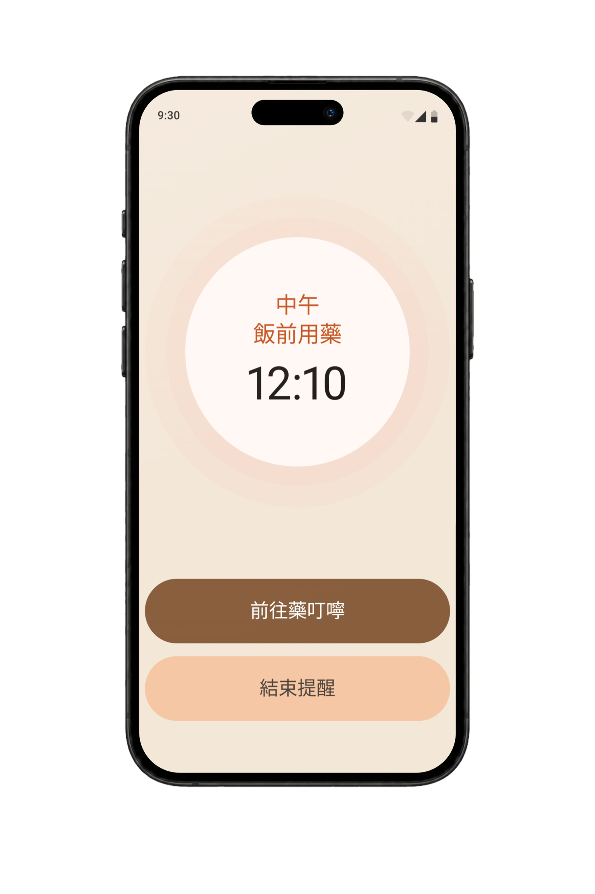

全螢幕提醒
一般通知容易被忽略，改成時間到直接佔滿畫面。
6 年 UI/UX 設計經驗
熟悉 B2B/SaaS 產品與數據儀表板，具備 Web、Mobile App 與後台系統的跨裝置設計經驗。擅長在設計前釐清需求與流程規則，近期獨立完成一款 App，從產品規劃、設計到實作。
不論是家人、孩子，還是毛小孩，每一份照顧都有不同的用藥需求。當需要照顧的對象越多，用藥安排也越容易變得複雜。MedReminder 幫助你依照不同對象

觀察市面上的用藥管理 App，發現多數以個人用藥提醒為主，難以滿足更多元的用藥管理需求，以下歸納出三個常見的問題情境。

孩子的感冒藥、
長輩的慢性病藥，
吃藥時間和次數都不一樣。

不論是多寵家庭還是愛媽，
每隻毛孩的藥都不同，
只靠記憶很容易搞混或漏餵。

藥袋混在一起，
分不清哪次看診開的，
短期藥、長期藥傻傻分不清。
核心設計
用藥提醒App 以「療程」為單位管理用藥：同一次看診、同一個病的藥收在一起，一起開始、一起結束，需要時再一起恢復。

01
依對象建立療程，例如「媽媽・高血壓」，把同一次看診的藥放在一起，每種藥各自設定頻率與起訖日。

02
病好了就結束整個療程，裡面的藥一起停止提醒、不算漏吃，服藥紀錄完整保留；藥品到期也會自動結束。

03
復發或回診開同樣的藥，從「已結束療程」直接恢復，不用重新輸入每一種藥。
相較於以單一藥品記錄的做法，App 整合「誰吃、為什麼吃、吃多久」，清楚區分短期與長期用藥；即使療程結束，未來復發也能直接恢復，無須重新建立，讓用藥紀錄更完整且具延續性。
照顧者情境
照顧者常常餵完藥，才想起來忘了記錄。服藥紀錄把全家的用藥狀態放在同一頁，漏記的藥可以一次補齊。

01
月曆標出有未服用的日子，下方依「人 › 療程」列出每顆藥的早、中、晚、睡前狀態，用符號加顏色雙重標示。

02
點對象名稱，自動跳到第一個有未服用的時段，同一時段跨療程的藥可以一次補登，時間預設為原本的提醒時間。

03
凌晨仍算前一天，半夜吃的睡前藥不會被誤判為未服用；可補登最近 3 天（含今天），更早的紀錄僅供查看。
照顧者最常遇到的不是「沒吃」，而是「吃了但沒記」。補登以照顧者實際的流程設計：以人為單位、跨療程、依時段一次完成。同時提示「補登只是記錄，漏服的藥請依醫師或藥師指示」，讓紀錄更準確，但不取代專業判斷。

一般通知容易被忽略，改成時間到直接佔滿畫面。

依藥袋上的「飯後 30 分鐘」「睡前」設定提醒，貼近實際的服藥習慣。

串接健保署開放資料，輸入藥名就能找到藥品資訊。
開發時間
50小時架構討論 8小時、Figma 設計 6小時、與 AI 協作開發約 36小時雙平台
2個平台採用 React Native + Expo SDK 56無障礙設定
AA對比文字大小可調、深色模式研究市面上的用藥管理 App，歸納照顧者的痛點與使用情境。
繪製 Figma 草圖、討論架構。先寫規格，再讓 AI 寫程式。
依規格開發各個畫面，並用 5 個角色進行第一輪測試。
依測試結果調整，持續優化並再次測試。
設計和程式共用同一套 token，畫面與實作保持一致。

暖色大地色系，
分淺色與深色兩種模式。

Figma 變數轉成
程式裡的 design tokens。

讓 AI 直接讀取設計稿，
照著設計實作。
AI 負責加速，判斷留給自己。
這個專案在 3 週內完成，AI 是主要的加速器。但每一個產品決策，例如做什麼、不做什麼、怎樣才算做好，都是我自己決定的。
| 我負責 | AI 負責 |
|---|---|
| 定義產品範圍與規格 | 依規格實作程式 |
| 建立設計系統與視覺標準 | 從設計稿產生介面 |
| 決定採用哪些建議、捨棄哪些 | 設計評審：找出問題與邊界情況 |
| 以照顧者情境驗證是否合理 | 產生測試資料、檢查死路 |
1
開發前先寫好三份文件，讓 AI 每次都依照同一套標準工作：
AI 寫得很快，但沒有規格就容易走偏。規格讓速度和一致性可以同時存在。
2
透過 Figma MCP，AI 可以直接讀取設計稿。設計系統中的顏色、字級與間距轉成程式裡的 design tokens，設計和實作共用同一套標準，減少「設計稿和成品長得不一樣」的落差。
3
每完成一個畫面，就截圖請 AI 評審，再依回饋調整。AI 的建議不一定適合這個產品，我會進行評估並決定是否採用。
範例
看到凌晨 00:51 仍顯示「11/19（今天）」，判斷是日期錯誤。
這是刻意的設計。睡前的藥常在午夜後才吃，以 00:00 分界會被誤判為漏服。
保留設計，並把它寫成設計決策。
AI 能快速提出 10 個選項，但要選哪一個，取決於對使用者和產品定位的理解。
先定義清楚「做對」是什麼，AI 的速度才有意義。
AI 能找出畫面上的問題，但照顧者實際怎麼整理藥袋，只能靠觀察真實的人。
我不希望這個 App 只停留在 Side Project。下一階段，我將邀請真實照顧者試用，驗證「藥品難以對應療程」的痛點是否存在，以及療程設計是否真正解決問題。
AI 能幫我實現產品，但只有真實使用者，才能告訴我它是否好用。
接下來的方向，將由使用者的回饋決定。